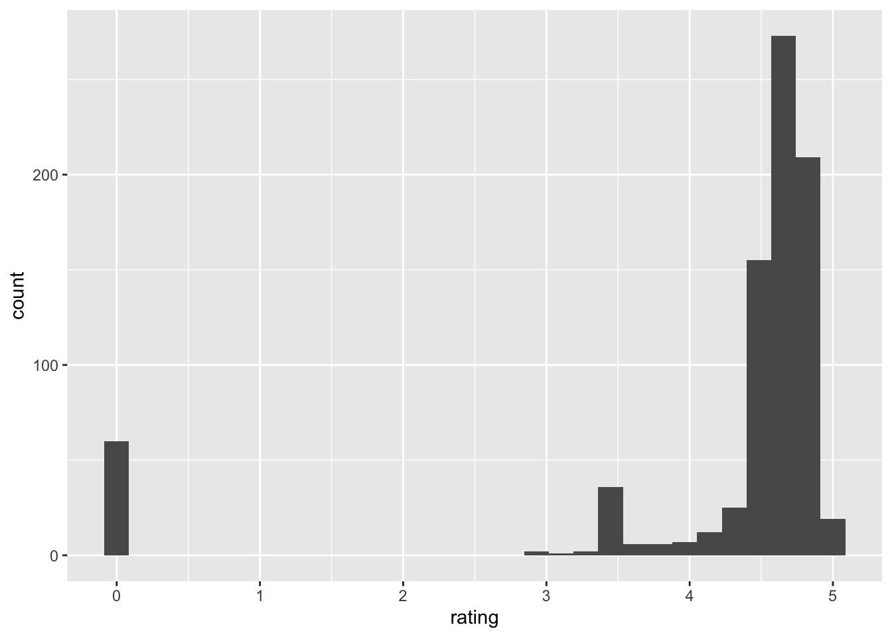

library(knitr)
library(tidyverse)
library(dplyr)Example analysis
Like many other graduate students, I am an avid consumer of coffee. I typically drink at least one cup of dark roast every morning with a splash of oat milk. I buy whole beans and grind them by hand, and brew using the pour over method. If I’m feeling fancy, I’ll go to a cafe and order a black iced Americano (objectively the best espresso drink).
Layering liquids
You can add coffee to a glass of oat milk by pouring slowly over the back of a spoon to create a layered drink!

Years of caffeine dependency have undoubtedly made me an authority on this topic, but in order to assess the current coffee zeitgeist, I will be analyzing a data set consisting of Walmart coffee listings from 500 different stores as well as consumer ratings of each coffee (Zub 2022). I will examine whether more expensive coffees are better rated than cheaper ones.
If you are interested in learning more about coffee, or just love to drink it, read on to find out which type might be your best bet!
First, let’s take a quick look at the data:
coffee <- read.csv("data/coffee-listings-from-all-walmart-stores.csv")
coffee <- coffee %>%
select(-c(thumbnail, seller_name, weight_formatted_to_gramms)) %>%
filter(grepl("roast", coffee_type))
roastTypes <- strsplit(coffee$coffee_type, split=",")
roastIndex <- lapply(roastTypes, grep, pattern="roast")
for (i in 1:length(roastTypes)){
roastTypes[i] <- roastTypes[[i]][[roastIndex[[i]][[1]]]]
}
roastTypes <- unlist(roastTypes)
#print(roastTypes)
kable(head(coffee))| title | coffee_type | rating | reviews | price | weight |
|---|---|---|---|---|---|
| folgers classic roast ground coffee, 40.3-ounce | classic roast | 3.8 | 93 | 13.92 | 40.3-ounce |
| café bustelo, espresso style dark roast ground coffee, vacuum-packed 10 oz. brick | espresso,dark roast | 4.7 | 914 | 3.76 | 10 oz |
| folgers classic roast ground coffee, medium roast coffee, 25.9 ounce canister | medium roast,classic roast | 4.4 | 740 | 9.97 | 25.9 ounce |
| great value classic roast medium ground coffee, value size, 48 oz | classic roast | 4.7 | 1598 | 9.98 | 48 oz |
| great value classic roast medium ground coffee, 30.5 oz | classic roast | 4.2 | 263 | 7.98 | 30.5 oz |
| caf bustelo, espresso style dark roast ground coffee, vacuum-packed 10 oz. brick | espresso,dark roast | 4.7 | 914 | 3.76 | 10 oz |
Data dictionary
title: the brand and name of the coffee
coffee_type: the type of roast of the coffee
rating: the average rating of the coffee
reviews: the number of reviews of the coffee
price: the retail price of the coffee
weight: the weight for one package of the coffee
Analysis
To keep things simple, we will subset the data to only look at the three most common roast types: light, medium and dark.
library(ggplot2)
coffee$roastTypes <- roastTypes
coffee <- coffee %>%
filter(roastTypes %in% c("dark roast", "medium roast", "light roast"))
p <- ggplot(coffee, aes(roastTypes))+
geom_bar()+
xlab("Roast Types")
pFigure 1: a bar chart of the number of coffees in each roast type.
Let’s look at the distribution of the different ratings:
ggplot(coffee, aes(x=rating))+
geom_histogram()`stat_bin()` using `bins = 30`. Pick better value with `binwidth`.
Figure 2: A histogram of the coffee ratings.
Just for fun, let’s look at the mean rating for each type of roast:
ratingMeans <- coffee %>%
group_by(roastTypes) %>%
group_modify(~ as.data.frame(mean(.$rating)))
colnames(ratingMeans)[[2]] <- "avgRating"
ratingMeans# A tibble: 3 × 2
# Groups: roastTypes [3]
roastTypes avgRating
<chr> <dbl>
1 dark roast 4.33
2 light roast 3.37
3 medium roast 4.31We can see that dark and medium roast are much higher rated than light roast coffees.
Now, let’s plot the rating of the coffee against the price, in order to see whether more expensive coffees are better.
Note
Since the coffees come in different sizes, we first need to calculate the unit price for each product.
coffee <- coffee %>%
mutate(numericWeight = as.numeric(gsub("([0-9]+).*$", "\\1", weight))) %>%
mutate(unitPrice = price/numericWeight)Warning in mask$eval_all_mutate(quo): NAs introduced by coercionNow, let’s plot the rating of the coffee against the price, faceted by the roast type.
I’m faceting by roast type because I think the three different roasts are not really interchangeable and thus should be considered individually.
p2 <- ggplot(coffee, aes(x=unitPrice, y=rating))+
geom_point()+
geom_smooth(method=lm)+
facet_wrap(~roastTypes)+
xlab("Unit Price")
p2`geom_smooth()` using formula 'y ~ x'Warning: Removed 48 rows containing non-finite values (stat_smooth).Warning: Removed 47 rows containing missing values (geom_point).Figure 3: Scatter plots of the coffee ratings against the unit price, faceted by the roast type.
Across the three different coffees, we can see that there is a slight decreasing trend. This means that a more expensive coffee does not necessarily indicate a better tasting one! Unfortunately, as we saw from the histogram of coffee ratings, the distribution of the ratings is heavily left-skewed so we actually do not have much data on lower-rated coffees. Thus, the results from this analysis should be taken with several grains of salt, until we get more data. I hope you’ve enjoyed this pretentious coffee data analysis!
Functions used:
dplyr (Wickham et al. 2022): filter, mutate, select, group_by, group_modify
ggplot2 (Wickham 2016): geom_histogram, geom_point, geom_smooth, facet_wrap
References
Wickham, Hadley. 2016. Ggplot2: Elegant Graphics for Data Analysis. Springer-Verlag New York. https://ggplot2.tidyverse.org.
Wickham, Hadley, Romain François, Lionel Henry, and Kirill Müller. 2022. Dplyr: A Grammar of Data Manipulation. https://CRAN.R-project.org/package=dplyr.
Zub, Dmitriy. 2022. “Walmart Coffee Listings from 500 Stores.” Kaggle. https://www.kaggle.com/datasets/dimitryzub/walmart-coffee-listings-from-500-stores.